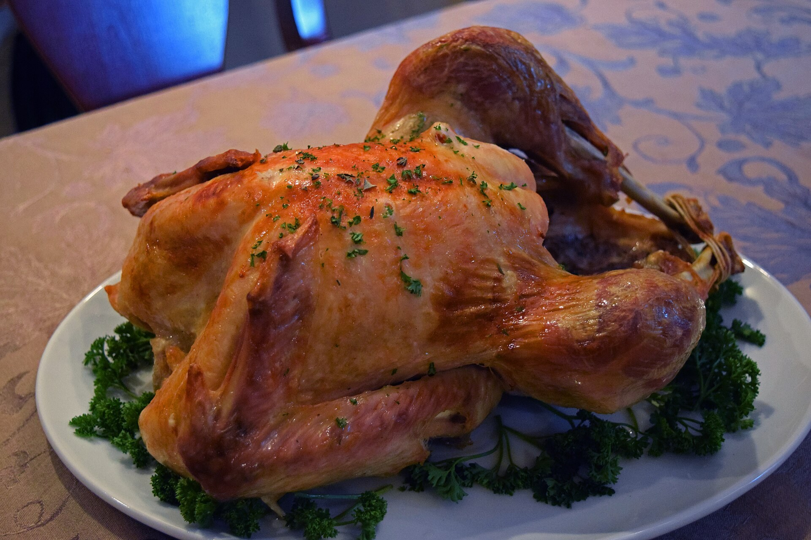

US Thanksgiving dinner costs rise: $58.63 for 10 people
The American Farm Bureau Federation says the dinner is up 6% and turkey 10%. A separate figure cited by Al Jazeera puts turkey up 26%.

What happened
The cost of a US Thanksgiving dinner rose in 2026. The American Farm Bureau Federation’s (AFBF) 41st annual survey puts the classic dinner for 10 at $58.63 ($5.86 per person) — more than 6% above 2025 and the first increase since 2022.
Turkey — the main driver
The main driver is turkey. Per the AFBF, a 16-lb frozen bird costs $23.68, up 10% on the year. A separate Century Foundation analysis cited by Al Jazeera puts turkey up 26% and the whole dinner up 11%. Industry sources (AFBF, CBS) tie turkey prices to avian influenza (HPAI) and a recovering flock.
Other items
Per the AFBF, cranberries and milk rose about 9%, dinner rolls 7% and sweet potatoes 5%. About a third of items actually fell, including a vegetable tray (−3.7%) and frozen pie crusts.

What families are doing
Per a LendingTree survey cited by Al Jazeera, about 62% of hosts plan to borrow money for the meal, 18% are using buy-now-pay-later loans, and a third report financial strain. Many families are shifting to potluck-style gatherings.
What officials said
This year, the cost of a Thanksgiving dinner for ten people is going up. It will be $58.63. — Faith Parum, Deputy Chief Economist, American Farm Bureau Federation